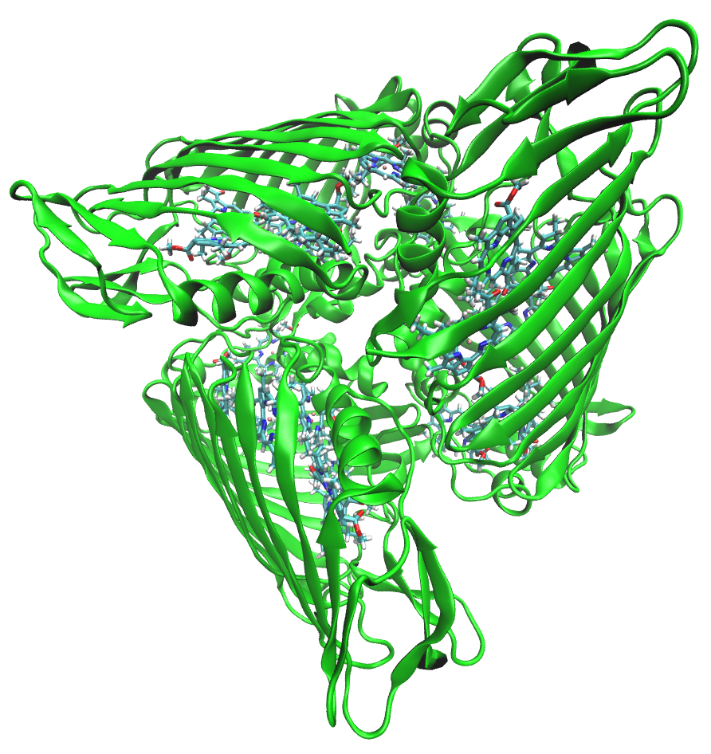
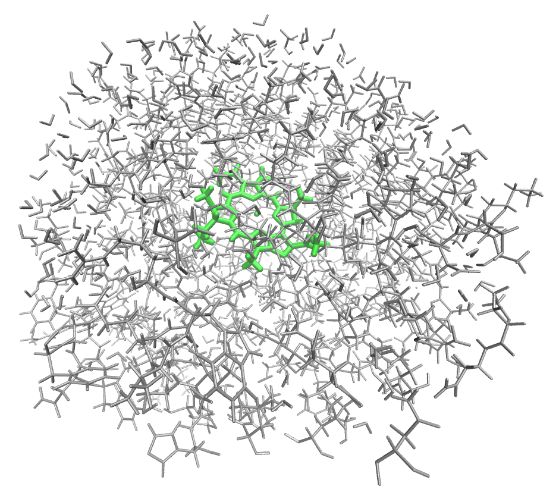
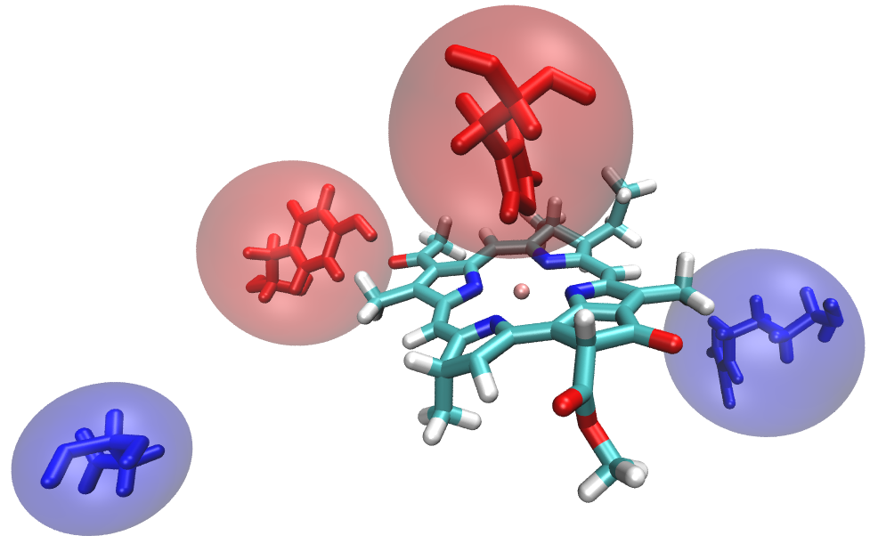
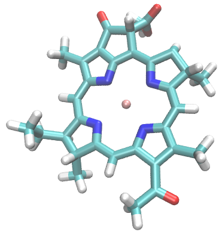
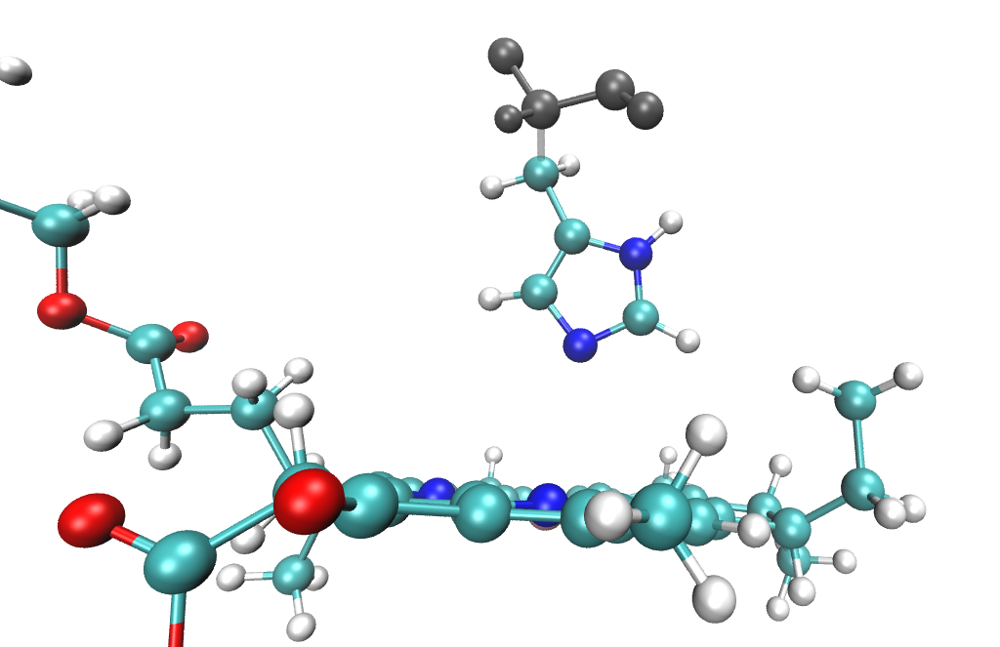
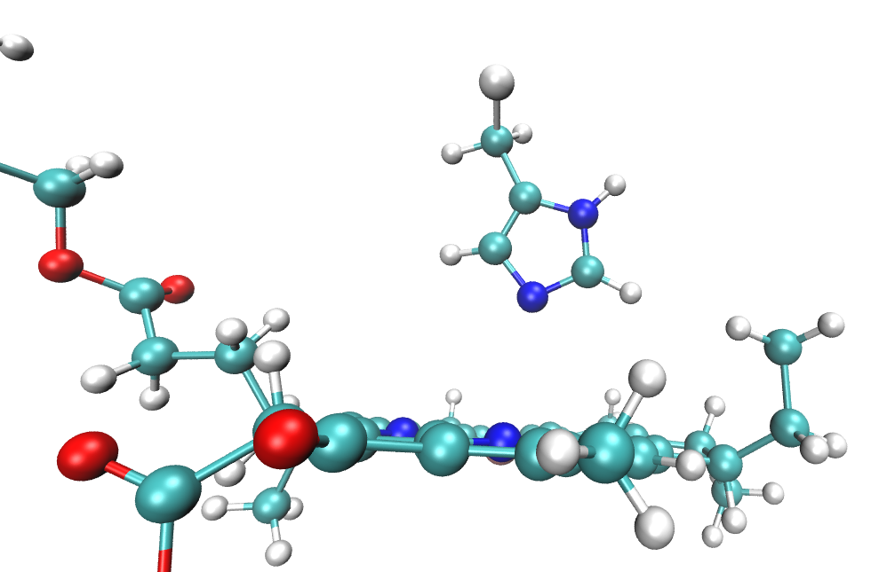
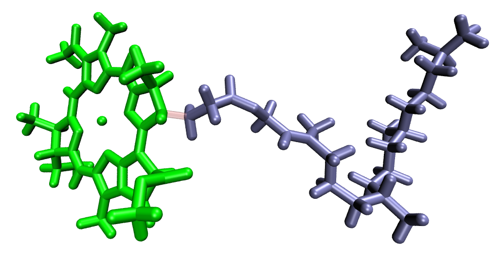

FMO: Applied flexible EFP
Overview
As is the case with many photoactive proteins,computational methods struggle to reproduce experimental spectra for the Fenna-Matthews-Olson complex (FMO). Work by Kim et al shows that flexible QM/EFP can be applied to FMO to correctly generate computational results in quantitative agreement to experimental spectra.
The key to applying EFP to your system is to carefully define the active site and EFP region. FMO is a trimeric protein with eight bacteriochloropyll a (BChl) pigments in each monomer. FMO completes energy transfer via excitonic couplings across these eight BChls. A summary of the complete workflow that was performed is the following: 1) molecular dynamics (MD) simiulations of the FMO protein in water and counter ions, 2) QM/MM (not EFP) geometry optimization of each active site (active sites consist of one BChl pigment and typically 3 H-bonding amino acids), and 3) flex-EFP excited state energy calculations of each pigment.
In the case of FMO, these steps must be repeated on several snapshots from MD to account for variation in the resting state of the structure, and the QM region must be defined carefully in both the QM/MM and flex-EFP stages. It might not be universally true that one must perform QM/MM geometry optimization. This page is a walkthrough for the flex-EFP procedure only. Molecular dynamics and QM/MM optimizations are assumed to be complete for your system prior to these steps.
{kind=link}


You will need a structure file (.g96) and topology information (.top, for atom charges). A structure file can be extracted from a GROMACS molecular dynamics trajectory and all water molecules more than 15 angstroms from the protein’s surface have been removed. For a chlorophyll-containing protein, you will likely want to optimize the geometry of each active chlorophyl molecule (with very close amino acids/water molecules) separately with more standard QM/MM approaches before proceeding with EFP calculations on the optimized geometry. For this example, the third BChl, residue number 361, has been optimized and will be the QM region for the EFP calcuation.

First, an EFP region must be defined. Every amino acid, (non QM) BChl, and water molecule containing an atom within 15 angstroms of the QM BChl headring.
The headring is defined by the atomnames: MG CHA CHB HB CHC HC CHD HD NA C1A C2A H2A C3A H3A C4A CMA HMA1 HMA2 HMA3 NB C1B C2B C3B C4B CMB HMB1 HMB2 HMB3 CAB OBB CBB HBB1 HBB2 HBB3 NC C1C C2C H2C C3C H3C C4C CMC HMC1 HMC2 HMC3 CAC HAC1 HAC2 CBC HBC1 HBC2 HBC3 ND C1D C2D C3D C4D CMD HMD1 HMD2 HMD3 CAD OBD CBD HBD CGD O1D O2D CED HED1 HED2 HED3
The headring surrounded by the EFP region looks like this:
{kind=link}

As you can see, the solvatochromic environment of each BChl is overwhelming as an ensemble. The mission of EFP is to break this complex environment into each contributing “fragment.” Then, the most important (highest contributing) fragments can be isolated. The final calculations allow us to look at a focused version of the environment like the image below:
{kind=link}

Each fragment induces a shift to the BChl excited state energy. Pairwise excitation energy decomposition reveals the magnitude and direction (ie, blue or red shift) that each fragment induces to a given BChl molecule. Thus, EFP can offer insight of the inner-workings of solvatochromic control over the protein’s optical spectra.
Structure Preparation
Extract a single snapshot of MD extracted from GROMACS ie: gmx traj -f md_50.trr -s md_50.tpr -o bchl361-79002.g96(.g6 format).
Please note that extracting larger systems can occasionally cause columns to be misaligned due to the residue ID number passing from 9999 to 10000.
This misalignemnt can make the structure appear strangely in VMD or other visualizers (ie, you will see “sheets” of waters with coordinates
read incorrectly). Though it shouldn’t matter, you can fix the problem by realigning the columns.
Here is an example of a script that can do this with an output file of formed_bchl361-79002.g96.
Now, we need to know which amino acids, cofactors, and water molecules constitute the EFP region. One method to find this is to
make use of the gmx select command, but this will take a bit of footwork. You will need to create an index file
that defines the BChl head ring group for reference in gmx selections. The code below will generate this index file with the default
name index.ndx; index.ndx contains all standard GROMACS index groups (system, protein, etc), with one final nonstandard group, ‘headring’.
1gmx make_ndx -f formed_bchl361-79002.g96 <<EOF
2r 361 & a MG CHA CHB HB CHC HC CHD HD NA C1A C2A H2A C3A H3A C4A CMA HMA1 HMA2 HMA3 NB C1B C2B C3B C4B CMB HMB1 HMB2 HMB3 CAB OBB CBB HBB1 HBB2 HBB3 NC C1C C2C H2C C3C H3C C4C CMC HMC1 HMC2 HMC3 CAC HAC1 HAC2 CBC HBC1 HBC2 HBC3 ND C1D C2D C3D C4D CMD HMD1 HMD2 HMD3 CAD OBD CBD HBD CGD O1D O2D CED HED1 HED2 HED3
3name 26 Headring
4q
5EOF
Here is a visualization of atoms contained in the newly created index group:
{kind=link}

Note: the QM region will include the entire BChl, but the EFP region will be defined by distance to this ring group only.
The EFP region should be composed of all residues that contain at least one atom within 15 angstoms of the headring.
A new .g96 can be made using the command: gmx select -s md_80.tpr -n index.ndx -f bchl361-79002.g96 -select
'same residue as within 1.5 of group "Headring"' -on shell_index.ndx.
This looks for any atom within our cutoff (1.5 because GROMACS standard units are nm), then accepts every atom belonging to
the same residue as the found atom and adds these to the selection. The output of the command is named shell_index.ndx, which as the
extension implies, is another index file. This file has exactly one index group that is the EFP region.
Now, gmx editconf -f formed_bchl361-79002.g96 -n shell_index.ndx -o shell_bchl361-79002.g96 creates a new structure
file of the EFP region only. Note that you do not need to specify group output because the .ndx file only contains one group.
The structure should look like the ‘desired EFP region’ shared above on this page (in the Overview section).
The following scripts require a user-defined text file that lists which atoms will be included in the QM region, and any pair of atoms that form a covalent bond across the division of the QM and MM regions. The QM region for this structure will of course include atoms from the BCL residue 361, but we will also include atoms from the nearby histidine that coordinates the BCL magnesium atom shown below.

This shows the entire residue 361 (BCL) and 290 (HIS), however, we only want to include the side chain of this histidine. In other words, atoms that extend down the side chain after the alpha-carbon should be included in the QM region, and the backbone atoms should remain in the EFP region. That division looks like this:
{kind=link}

This is a tricky problem. To generate the fragment parameters, we will need an input file with every atom in the amino acid. After we have obtained an efp file with the full fragment’s parameters, the QM atoms will be stripped out. Now, this creates a second issue. The QM region must be capped with a virtual hydrogen, so the result looks like this:
{kind=link}

There is now a virtual hydrogen resting in roughly the same position as the the alpha-carbon (that is in the EFP region). When the efp parameter file for residue 290 is created, the QM atoms and the alpha-carbon will be stripped, and the EFP atoms bound to the alpha-carbon will have their multipoles and polarization points removed. The following scripts need some information from the user to correctly handle these fragments. A text file listing every atom to be included in the QM region, and every pair of atoms that form a covalent bond in which one atom is in the QM region and the other is in the EFP(MM) region. The format should be the same as the g96 file; ie, copy and paste the lines of your atoms from the structure file directly. The result should look like this example.
Please note that the boundaries must have the QM atom listed first. This example contains only one QM-MM boundary, but a second could be included in the following way:
1QM-MM
2boundary 1
3 290 HID CB 4423 7.642829418 5.747635365 6.631662846
4 290 HID CA 4421 7.514162540 5.827141285 6.594927311
5boundary 2
6 290 HID CB 4423 7.642829418 5.747635365 6.631662846
7 290 HID HB1 4424 7.690435886 5.791911602 6.719151974
Fragmentation
The protein residues within the 15 angstrom cutoff must be expressed individually. Because amino acids are a continuous chain, covalent bonds between neighboring amino acids have to be broken. Chemically, we would like to break the C-C backbone bond, however, standard PDB convention divides residues by the C-N bond. To change this, ‘C’ and ‘O’ atom names are included in the following aminoc acid. This way the ‘C’ and ‘CA’ (carbonyl carbon and alpha carbon respectively) bond is the division between bonded fragments. See the examples below.
PDB residues are divided like this:

For EFP, we would rather these two fragments look like this:

The atom coordinates are contained in the structure file, but they do not completely ‘agree’ with the amino acid numbering. Below is a snippet from the structure file with the EFP fragment 8 highlighted. Note that atom names ‘C’ and ‘O’ are included in the following fragment.
1 6 SER N 75 8.321870804 4.485276699 7.284091473
2 6 SER H 76 8.350618362 4.454034328 7.375734806
3 6 SER CA 77 8.417644501 4.567386150 7.205451488
4 6 SER HA 78 8.419803619 4.528203011 7.103761196
5 6 SER CB 79 8.368366241 4.711947441 7.193405628
6 6 SER HB1 80 8.269208908 4.708506584 7.148269176
7 6 SER HB2 81 8.421850204 4.761358261 7.112295628
8 6 SER OG 82 8.367326736 4.794726372 7.312560558
9 6 SER HG 83 8.454633713 4.832594395 7.325180531
10 6 SER C 84 8.560445786 4.558277130 7.268922329
11 6 SER O 85 8.572677612 4.533203125 7.387583256
12 7 ASP N 86 8.663642883 4.582690239 7.183378696
13 7 ASP H 87 8.638984680 4.619784832 7.092730999
14 7 ASP CA 88 8.804636002 4.563919544 7.209733486
15 7 ASP HA 89 8.821094513 4.593161583 7.313438892
16 7 ASP CB 90 8.842021942 4.416758537 7.207666874
17 7 ASP HB1 91 8.802436829 4.372995377 7.116020679
18 7 ASP HB2 92 8.804891586 4.358578205 7.292031765
19 7 ASP CG 93 8.994537354 4.388171196 7.197051525
20 7 ASP OD1 94 9.062387466 4.408482552 7.298908710
21 7 ASP OD2 95 9.046514511 4.348608971 7.086165905
22 7 ASP C 96 8.905342102 4.655499458 7.132633686
23 7 ASP O 97 8.919197083 4.634913445 7.010179996
The script make_AAs.py accomplishes this. A sample execution is:
python make_AAs.py shell_bchl361-79002.g96 bchl361-79002.g96 user_defined.txt topol.top
This script creates an input file for each fragment in the EFP region. The names take information from the fragment; For example, v_22_301.inp is a valine residue (v), residue number 22, and the first atom of this fragment has an atom ID of 301. Histidine residues are denoted hd_, he, or hp_ depending on protonation states, and non-standard amino acids are listed as the same residue name given in the g96 structure file (ie, bcl_360_5667.inp for the BCL res number 360). Virtual hydrogens are added automatically to amino acid fragments with an atom name H000. Non amino acids fragments are not capped by default. If a fragment cnotains QM atoms, the atom names will be added to the comment at the end of the file. See below the input file for HIS 290 (hd_290_4417.inp):
1 $contrl units=angs local=boys runtyp=makefp
2 mult=1 icharg=0 coord=cart icut=11 $end
3 $system timlim=99999 mwords=200 $end
4 $scf soscf=.f. dirscf=.t. diis=.t. CONV=1.0d-06 $end
5 $basis gbasis=n31 ngauss=6 ndfunc=1 $end
6 $DAMP IFTTYP(1)=2,0 IFTFIX(1)=1,1 thrsh=500.0 $end
7 $MAKEFP POL=.t. DISP=.f. CHTR=.f. EXREP=.f. $end
8 $data
9 hd_290_4417
10 C1
11 C 6.0 74.77875233 60.31275272 64.73697186
12 O 8.0 73.73520374 59.84195232 64.28843975
13 N 7.0 75.60393810 59.59977150 65.51030636
14 H 1.0 76.44154072 60.08422375 65.79982281
15 CA 6.0 75.14162540 58.27141285 65.94927311
16 HA 1.0 74.66980457 57.75234222 65.11497974
17 CB 6.0 76.42829418 57.47635365 66.31662846
18 HB1 1.0 76.90435886 57.91911602 67.19151974
19 HB2 1.0 77.02376842 57.34309196 65.41343212
20 CG 6.0 76.16473675 56.02392197 66.75217152
21 ND1 7.0 75.64018726 55.49627781 67.90104389
22 HD1 1.0 75.26696682 56.08877659 68.62887859
23 CE1 6.0 75.73244572 54.17556286 67.87623882
24 HE1 1.0 75.25365353 53.56580257 68.62813473
25 NE2 7.0 76.30198002 53.75784874 66.71539783
26 CD2 6.0 76.59914494 54.95519638 66.06870174
27 HD2 1.0 77.29931355 54.98696804 65.24702549
28 H000 1.0 74.94270842 61.35706426 64.52140121
29 H000 1.0 74.42844016 58.29696791 66.75837919
30 $end
31!comment atoms to be erased: CA CB HB1 HB2 CG ND1 HD1 CE1 HE1 NE2 CD2 HD2
32!polarization points to remove: N HA
Note that CA is the alpha-carbon, and is not a QM atom. However, CA is bound to a QM atom, and will be removed from the paramter file in a later step. If a residue contains only QM atoms, no input file will be created (no bcl_360_.inp file in this case).
Database Comparison
EFP input files are now generated and the paramters can be calculated. To avoid computing every fragment’s gasphase parameters directly, each fragment is compared to a database of pre-computed parameters of the same amino acid. If the RMSD between the two structures is sufficiently small, then the parameters are good enough for the initial representation of the fragment wavefunction.
fragment_RMSD.py a_4_45.inp
This execution will read the given file, a_4_45.inp and compute the RMSD with each .efp file it can find in a given
directory. For example, the path to the .efp database in this tutorial is given as
/depot/lslipche/data/yb_boss/flexible_efp/efpdb/ala/. The final folder, ala/, does not need to be specified, but
will be automatically filled as a desination given the input file starts with “a.” In other words, if you use this
script, you should replace the directory variable with your folder names, then have the final folder(s) be named
by the amino acid name (ie, ala/, cys/, thr/, etc). The desired RMSD cutoff (minimum to be considered a good match)
is listed at the start of the file, and can be adjusted easily.
If no suitable match is found in the database, a text file will be created named no_matches.txt, and an .efp file
will not be created. If you need to repeat this step, delete this text file to avoid confusion. The simplest way to
use this script for you entire EFP region is to make a bash script to iterate through every *.inp file and execute
fragment_RMSD.py *.inp. Note that if no database folder is found, or if the input is not a standard, non-terminal
amino acid, then the python script will return an error. These special cases will need to be computed individually.
Non-Amino Acids and Cofactors
The previous script is good for a fragmentation scheme that includes amino acids and full molecules. Sometimes it is desirable to fragment large molecules further. In FMO, the full bacteriochloropylls can have trouble converging as whole molecules, so they will be split into two fragments. Note that make_AAs.py creates fragments for the Bchls, but it creates one fragment for the entire residue, and these will not be used in the final calculation of this example. Below is the division of the head and tail groups:
{kind=link}

The script make_bchls.py creates two fragment input files for each Bchl molecule according to that division,
and it can be executed by:
python make_bchls.py shell_bchl361-79002.g96 361
This script is hard-coded for the FMO system. Generally, cofactors should not need to be split into multiple fragments, but chlorophyll molecules can be troublesome. If you need to split a group like this for you system, you can edit the “Headrings” list to include every atom name that one file should include, then the omitted names will be used to make the other file.
The Classical Region Fragment
The EFP parameter files are finished. Now, a new fragment will be created with the remaining classical atoms. That
is, every atom that is not in the QM or EFP regions. make_mm.py reads the structure of the EFP region only, the full
structure, and the topology to create an efp parameter file. This classical region “fragment” is like a normal parameter
file, but it only contains coordinates, monopoles, and screen sections; it does not the contain dipole, quadrupole,
octupole, and polarization point sections. Sample execution:
python make_MM.py shell_bchl361-79002.g96 bchl361-79002.g96 topol.top
The topology file is necessary for atomic charges, and both structure files are read to so that only MM atoms will be included (both QM and EFP atoms are omitted).
Stripping QM atoms from EFP files
Some of the fragment parameter files contain atoms that are also in the QM region. Additionally, when a QM virtual hydrogen is added to replace the bond of an EFP atom, that EFP atom is overlapped with the virtual hydrogen. The overlapping EFP atom should be removed to avoid sporatic effects to the QM region. EFP atoms that are bound to the removed atom will also have their multipoles and polarization points removed. The coordinates, monopoles, and dampening (screen) terms are retained.
A sample execution is:
cut_qm.py hd_290_4417.inp hd_290_4417.efp
ala_33_473.inp is an alanine fragment with QM atoms commented to be deleted and EFP atoms to have polarization points removed. a0001.efp is a parameter file that is either the output of the input file, or translated information from a database parameter file to align with the input’s coordinates.
Final Input Generation
<Coming very very soon>